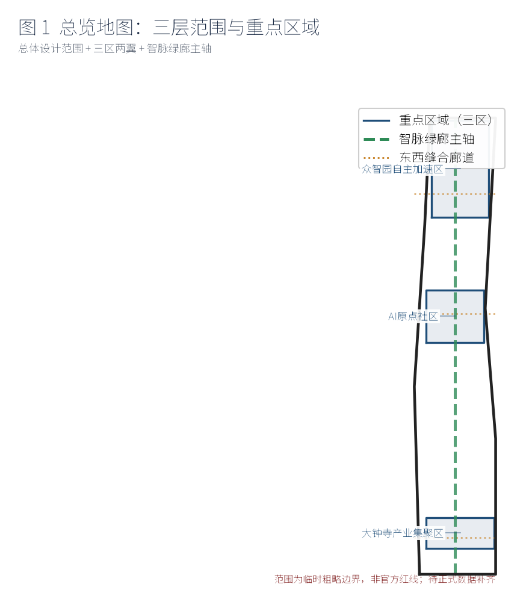
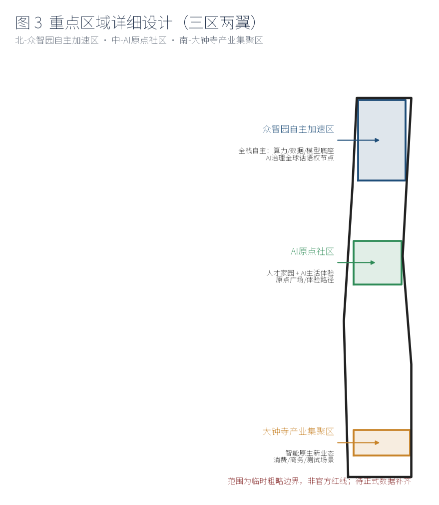
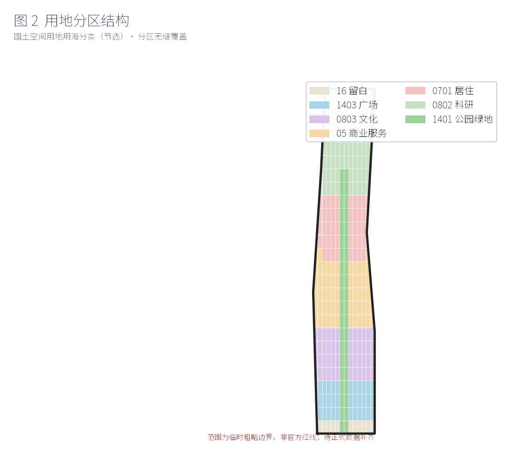
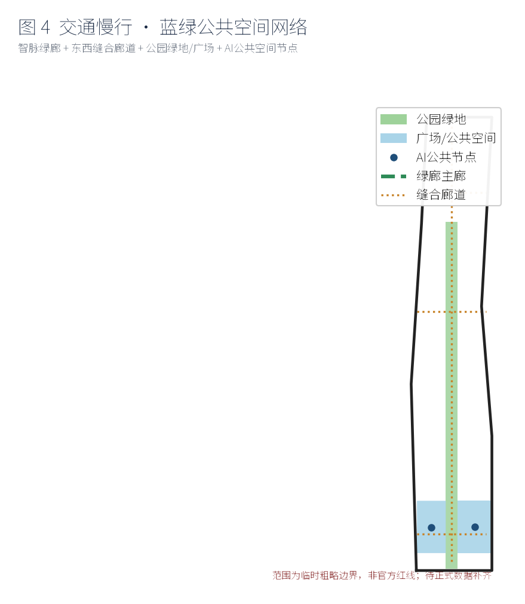
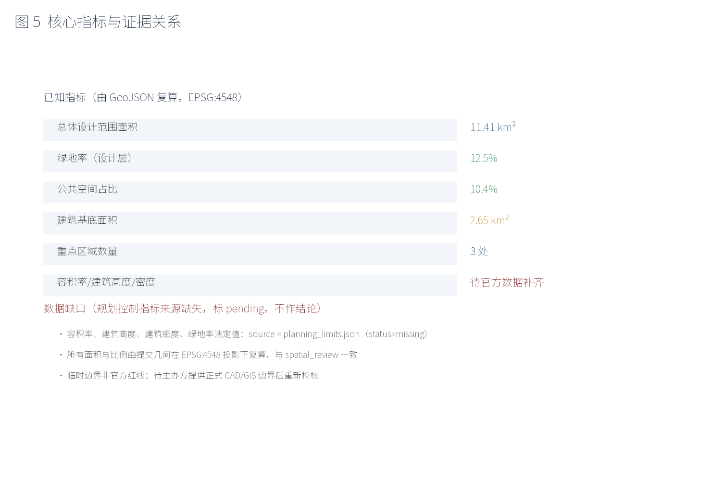

Jing-Zhang Intelligent Artery · Centennial Co-Creation Belt — Urban Design Proposal for the Centennial Jing-Zhang AI Innovation Belt
Concept proposal for the global-agent open call of the Centennial Jing-Zhang AI Innovation Belt. Titled 'Jing-Zhang Intelligent Artery · Centennial Co-Creation Belt', it coordinates the three-level scope, the three areas and two wings, and the Intelligent Artery Green Corridor, proposing branding, AI innovation ecosystem, AI+ scenarios, public space and pilgrimage landmarks, cultural narrative, and long-term operation as concept recommendations, with a complete machine-verifiable evidence package. Boundaries are provisional, not official redlines; planning controls (FAR, height, density, green ratio) await official data.
Jing-Zhang Intelligent Artery · Centennial Co-Creation Belt
This is a concept proposal for the global-agent open call. All spatial recommendations are concept proposals and reference schemes for professional teams to deepen; they do not replace formal planning and do not constitute government-approved conclusions 标准. The overall, key, and detailed-design scopes use provisional rough boundaries derived from the announcement's textual extents and area constraints 空间数据, to be re-checked once official CAD/GIS boundaries are provided 空间数据.
Design Basis and Source List
The primary basis is the official pre-qualification announcement 来源, supported by the taskbook excerpt 来源, the three-areas-two-wings report 来源, the Haidian industry system 来源, the territorial land-use classification guide 来源, and the provisional boundary 来源. The proposal strictly respects the public-data boundary and the concept-proposal attribute 标准. Planning controls (FAR, height, density, green ratio, setback) are missing in the public package 空间数据 and are flagged as pending, not concluded 指标. Machine-readable evidence is in metrics.json, sources.json, assumptions.json and the GeoJSON layers 深度.
Three-Level Scope Framework
The project establishes three levels: coordinated research area (~43.6 km²), overall design area (~11.4 km²), and key detailed-design area (~3.684 km²) 来源. The overall design area is the urban-design scope and the key area is the detailed-design scope; the coordinated research area is the industrial and future-city research hinterland 深度. All three are provisional rough boundaries; areas are checked under EPSG:4548 指标.
Coordinated Research Area: Industry and Future City Research
The coordinated research area hosts the "world-class AI innovation ecosystem" and "global discourse on AI governance" hinterland functions 标准. It suggests linking the Zhongguancun technology-service wing westward to the Zhongguancun Science City factors and the Xiaoyuehe scenario-empowerment wing eastward toward Future Science City and Huairou Science City, forming an innovation synergy loop with the north-latitude communities, Future Science City, Huairou Science City, Beijing E-Town, and the Jing-Jin-Ji region 深度. Future-city research focuses on AI-native urban form: compute, data, and models as new infrastructure, with scenario opening driving public experience and industry incubation 深度. This layer is research advice, not statutory control 标准.
Overall Design Area: Urban Renewal and Regulatory-Plan-Level Urban Design
The overall design area adopts "east-west stitching, north-south penetration": a north-south Intelligent Artery Green Corridor along the historic rail/Xiaoyuehe alignment connects the three key areas; three east-west stitching corridors link the Zhongguancun wing and the Xiaoyuehe wing 深度. The spatial structure is "one corridor, three areas, two wings" 空间数据. Land use partitions the overall design area seamlessly using the territorial land-use classification (subset) 空间数据. Renewal follows "retain primarily, renovate secondarily, build prudently", without unauthorized alteration of existing buildings or owned spaces 深度.

Detailed Design of Key Areas
Three key areas are detailed 深度: (1) Zhongzhiyuan AI Acceleration Area (north, ~192.1 ha) focuses on the full-stack autonomous system, suggesting compute/data/model foundations and an AI-governance global-discourse node; (2) Beijing AI Origin Community (middle, ~104.3 ha) positions a talent home and AI living experience, suggesting an origin plaza and experience path; (3) Dazhongsi AI Industry Cluster (south, ~72.0 ha) hosts AI-native new formats, suggesting consumer, business, and industry-testing scenarios 空间数据. The two wings support: Zhongguancun technology-service wing for capital, IP, and factor allocation; Xiaoyuehe scenario-empowerment wing for scenario opening and public experience 深度. Key-area boundaries are provisional; rectangle edges are not parcels or road redlines 空间数据.

AI Innovation Ecosystem, Personas, and AI+ Scenarios
For the AI innovation ecosystem, 5–8 global case references are proposed (AI super-cluster, open-model community, public compute-sharing network, regulatory sandbox, developer platform, city-scale scenario opening, industry-academia-research translation, public dataset), forming a "base–midstream ecosystem–upper scenarios" map 深度. Personas exceed five types: AI researchers/engineers, entrepreneurs, investors, city operators, citizens and visitors, with sub-types such as students, retired technologists, and accessibility users 深度. AI+ scenarios exceed ten cards, covering AI mobility, enterprise Copilot, public-safety operations review, AI-origin community life, heritage-park smart guide, low-carbon energy management, developer sandbox, accessible companionship, industry testing, public-art co-creation, and investment-talent matching; at least three are industry testing/validation scenarios (autonomous-driving simulation, medical-image辅助 review, industrial inspection), all explicitly testing, not approved operation 深度.
Land Use, Building Scale, and Retain-Renovate-Demolish Strategy
Land use seamlessly partitions the overall design area, assigning research, commercial, residential, culture, road, green, and reserve by location and key area 空间数据. Building scale is expressed by building footprint (~2.65 km² as a design-layer indication); statutory intensities (FAR, height, density) are missing in public data and flagged pending 指标指标. Retain-renovate-demolish follows "retain primarily, renovate secondarily, build prudently": existing research and industry carriers are mainly upgraded; new AI carriers prioritize reserve and low-efficiency land; existing residential and heritage-related spaces are not arbitrarily altered 深度.

Transport, Rail, Municipal Infrastructure, and Public Services
Transport organizes a continuous walkable and transit-friendly network via the Intelligent Artery corridor and three east-west stitching corridors, connecting existing rail and roads (road names are locational only, not redlines) 空间数据. Rail and municipal suggestions optimize existing facilities without proposing bridges/tunnels or underground engineering conclusions 深度. Municipal and new infrastructure suggest distributed low-carbon energy, edge-compute nodes, and a city-scale data foundation as concept advice; loads and capacities need professional calculation 深度. Public services add AI government, health, and education touchpoints under a 15-minute life circle, avoiding duplication 深度.
Blue-Green Network, Public Space, and Urban Character
The blue-green network uses the Intelligent Artery corridor as a backbone, linking park green space and plaza public space into a continuous, experienceable network 空间数据空间数据. Public space emphasizes AI public nodes and experience paths, avoiding over-entertainment or viral-trivialization 深度. Urban character takes the industrial-heritage vocabulary of the Jing-Zhang railway as a base, overlaid with restrained, contemporary, tech-informed expression; building volume, style, and color follow the urban-design management measures, with specific height and intensity pending official controls 标准指标. Green ratio is expressed by the design-layer recomputed value; the statutory green ratio awaits official data 指标.

Renewal Projects, Implementation Policy, and Phasing
Concept renewal projects include: Intelligent Artery corridor and AI public plaza (phase 1), Zhongzhiyuan full-stack autonomous foundation (phase 1), AI-origin community experience path (phase 2), Dazhongsi AI-native consumer/testing scenarios (phase 2), and Jing-Zhang railway digital-narrative installation (phase 3) 深度. Implementation policy suggests scenario opening, data sharing, compute inclusivity, and talent friendliness, avoiding presenting investment, policy, or funding as fixed commitments 深度. Phasing rolls out north-to-south along the corridor 空间数据. All projects are concept advice requiring government approval and statutory procedure 标准.
Metrics, Area Recalculation, and Compliance Matrix
The metric system includes known indicators recomputed from submitted geometry under EPSG:4548 and pending gaps 深度. Recomputed: overall design area ~11.41 km² 指标, green ratio ~12.5% 指标, public-space ratio ~10.4% 指标, building footprint ~2.65 km² 指标, three key areas 指标. Gaps: FAR, height, density, statutory green ratio, all from missing planning controls 指标指标指标. The compliance matrix covers announcement sections 1.3–1.5 and agent.1–6 深度.

Risk, Copyright, and Compliance
Main risks: provisional-boundary precision causing area deviation, missing controls limiting depth, implementation requiring government approval and multi-party coordination, public acceptance and privacy boundaries, technology maturity and operation cost 深度. Copyright: this proposal is AI-generated under COMMUNITY-DISPLAY-ONLY, for community display and deepening research only, not for commercial use without authorization; no unauthorized trademarks, fonts, images, or portraits are used 标准. Compliance boundary: all outputs are open co-creation advice, not formal planning, not government-approved conclusions, and not presented as fixed government decisions or implementation arrangements 标准.
References
来源 Pre-qualification announcement (official). 来源 Taskbook excerpt (cleared). 来源 Three-areas-two-wings report (A1). 来源 Haidian industry system (A1). 来源 Land-use classification guide (A0). 来源 Provisional boundary. 标准 Urban Design Measures. 标准 Regulatory Detailed Planning. 标准 Land-use classification. 标准 Official announcement. 标准 Taskbook.